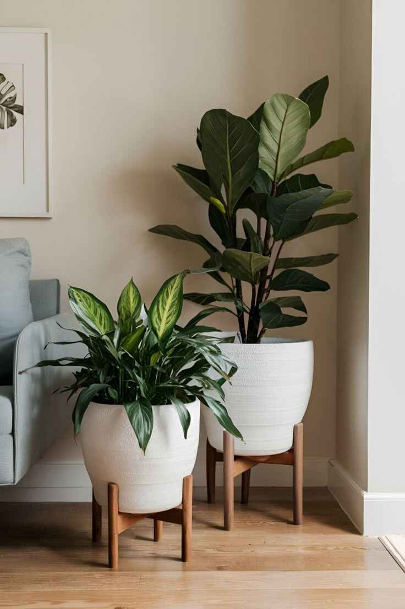

How It Works
Keeping track of your plant’s nutrient needs can be challenging, but Planters makes it effortless. With a built-in fertilization tracker and timely reminders, you’ll ensure your plants receive the nutrition they need to flourish.
- Smart Nutrient Tracking: Planters tailors fertilization schedules to each plant based on its type and growth stage.
- Timely Notifications: Receive reminders on the app and the digital screen of the pot when it’s time to fertilize.
- Custom Schedules: Adjust fertilization settings to match your plant’s unique needs, giving it the best chance to thrive.
Why Choose This Feature?
- No Guesswork: Never worry about when or how much to fertilize—Planters handles it for you.
- Healthier Plants: The right nutrients at the right time ensure strong and beautiful plants.
- Effortless Care: Ideal for beginners and experts alike, simplifying plant nutrition management.